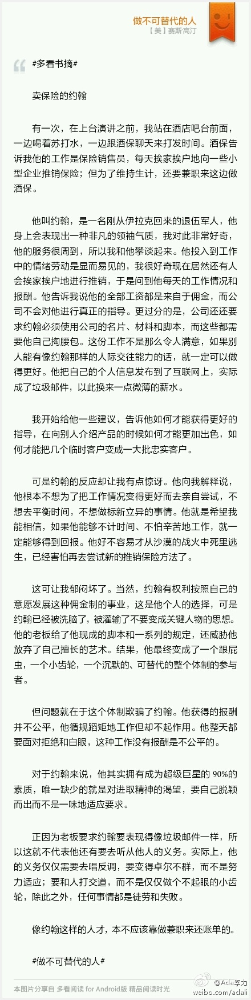

工业化管理适合流水线工人，不适合知识工作者，例如程序员//@沈卓立TouchChina:从老板的角度，一套能让每个不那么象约翰那么有天赋的人都可以完成既定工作目标的流程，比花时间精力找到20个约翰要容易的多，也可靠的多。工业化管理的精髓就是制度和流程化。小规模的事业另当别论，所以工作室里的艺术家@Ada李力:#多看书摘# 卖保险的约翰 有一次，在上台演讲之前，我站在酒店吧台前面，一边喝着苏打水，一边跟酒保聊天来打发时间。酒保告诉我他的工作是保险销售员，每天挨家挨户地向一些小型企业推销保险；但为了维持生计，还要兼职来这边做酒保。 他叫约翰，是一名刚从伊拉克回来的退伍军人，... 